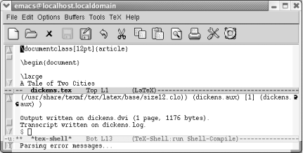
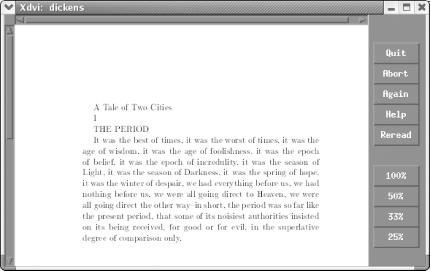

{% include JB/setup %}
{% raw %}
<div>
<div class="book" xml:lang="en"><div class="book"><div class="book"><div class="book"><h1 class="title"><a id="gnu3-CHP-8-SECT-5" class="calibre1"></a>Marking up Text for TEX and LATEX</h1></div></div></div><p class="copyright">GNU Emacs provides excellent support for marking up TEX files. Most
people today use LATEX , which is written in TEX and provides more
control over formatting. As a result, we'll talk
about LaTeX mode here.</p><p class="copyright">Before we launch into this discussion, we assume that you have set up
LATEX on your platform. On Red Hat Linux, it's set
up by default. Windows and Mac OS X users must install and configure
LATEX before proceeding.<sup class="calibre6">[<a id="gnu3-CHP-8-FNOTE-12" href="#ftn.gnu3-CHP-8-FNOTE-12" class="calibre2">12</a>]</sup>
         </p><p class="copyright">Emacs attempts to guess whether you're editing a TEX
or LATEX file and enter the appropriate mode. You can force LaTeX
mode if Emacs doesn't enter it automatically by
typing <span><strong class="calibre5">M-x latex-mode Enter</strong></span>.</p><div class="book" xml:lang="en"><div class="book"><div class="book"><div class="book"><h2 class="title1"><a id="gnu3-CHP-8-SECT-5.1" class="calibre1"></a>Matching Braces</h2></div></div></div><p class="copyright">LATEX commands often take
<a id="gnu3-CHP-8-ITERM-2497" class="calibre2"></a>
               <a id="gnu3-CHP-8-ITERM-2498" class="calibre2"></a>the form
<code class="calibre21">\keyword{text}</code>. LaTeX mode
doesn't try to figure out if you're
using the "right" keywords since
the language is extensible and you may have defined your own
keywords. It does, however, provide support for avoiding the most
common error: mismatched curly braces and dollar signs.</p><p class="copyright">In LATEX , curly braces ({}) and dollar signs ($$)
<a id="gnu3-CHP-8-ITERM-2499" class="calibre2"></a>
               <a id="gnu3-CHP-8-ITERM-2500" class="calibre2"></a>should always appear in pairs;
Emacs checks to make sure that each opening brace or dollar sign has
a counterpart. When you type a closing brace or dollar sign, the
cursor moves quickly to its counterpart (provided that it is on the
screen; it shows the context in the minibuffer if it is not), then
back again.</p><p class="copyright">Emacs generates braces in matching pairs. The command <span><strong class="calibre5">C-c {</strong></span> inserts opening and closing braces and
positions the cursor for typing between the braces.</p><p class="copyright">Typing <span><strong class="calibre5">C-c }</strong></span> moves you past the
right brace. It always finds the correct closing brace, given your
current position. If there is no closing brace, you get an error
message that says <code class="calibre21">Scan error: Unbalanced
parentheses</code>. You also get this error message if you type
<span><strong class="calibre5">C-c }</strong></span> while the cursor is in a
section that is not surrounded by braces, which can be a little
confusing.</p><p class="copyright">To check for mismatched curly braces and dollar signs, type <span><strong class="calibre5">M-x tex-validate-buffer Enter</strong></span>. This command
checks the entire buffer for unbalanced parentheses, curly braces,
dollar signs, and the like. (If you have a large file, you might want
to validate a region instead using <span><strong class="calibre5">M-x
tex-validate-region Enter</strong></span>). If it finds any errors, Emacs
displays an <code class="calibre21">*Occur*</code> buffer with
<code class="calibre21">Mismatches</code>: at the top and a list of lines on
which it found errors. You can then easily move to each line that
contains an error with <span><strong class="calibre5">M-x
goto-line</strong></span>.</p><p class="copyright">Sometimes a mismatched parenthesis early in the buffer can start a
chain reaction of "errors" through
the rest of the file. If you suspect that one of the corrections you
make may have fixed most of the remaining errors, simply run
<span><strong class="calibre5">tex-validate-buffer</strong></span> again.</p><p class="copyright">When you're stepping through errors, <span><strong class="calibre5">C-c }</strong></span> provides a good way to check where the
closing brace for a given opening brace is. Position the cursor right
after the opening brace and press <span><strong class="calibre5">C-c
}</strong></span>.</p></div><div class="book" xml:lang="en"><div class="book"><div class="book"><div class="book"><h2 class="title1"><a id="gnu3-CHP-8-SECT-5.2" class="calibre1"></a>Quotation Marks and Paragraphing</h2></div></div></div><p class="copyright">LaTeX mode also has features for <a id="gnu3-CHP-8-ITERM-2501" class="calibre2"></a>
               <a id="gnu3-CHP-8-ITERM-2502" class="calibre2"></a>
               <a id="gnu3-CHP-8-ITERM-2503" class="calibre2"></a>
               <a id="gnu3-CHP-8-ITERM-2504" class="calibre2"></a>handling quotation marks and
paragraph separation. Typing a quotation mark (") causes Emacs to
simulate left and right quotation marks. Left quotation marks are
represented as two backtick characters (``) while right quotation
marks are represented as two apostrophes (' '). (Left and right
quotation marks are not part of the standard ASCII character set.) If
you need to type a literal quotation mark for any reason, simply use
the quote-character command preceding the quotation mark, like this:
<span><strong class="calibre5">C-q</strong></span> ".</p></div><div class="book" xml:lang="en"><div class="book"><div class="book"><div class="book"><h2 class="title1"><a id="gnu3-CHP-8-SECT-5.3" class="calibre1"></a>Command Pairs</h2></div></div></div><p class="copyright">LaTeX mode provides support for <a id="gnu3-CHP-8-ITERM-2505" class="calibre2"></a>
               <a id="gnu3-CHP-8-ITERM-2506" class="calibre2"></a>inserting command pairs. To insert a
command pair, type <span><strong class="calibre5">C-c C-o</strong></span> (for
<span><strong class="calibre5">latex-insert-block</strong></span>). Emacs prompts
for the block name, and then for associated options. For example,
type <span><strong class="calibre5">C-c C-o Enter</strong></span> 
               <span><strong class="calibre5">document Enter Enter</strong></span> (the second <span><strong class="calibre5">Enter</strong></span> indicates no options). Emacs inserts the
command pair and positions the cursor between them:</p><a id="I_8_tt432" class="calibre2"></a><pre class="programlisting">\begin{document}
   
\end{document}</pre><p class="copyright">You can use this command to mark up a text file after you write it.
If you mark a region, you can type <span><strong class="calibre5">C-c
C-o</strong></span> to wrap a command pair around that region.</p><p class="copyright">A related command is <span><strong class="calibre5">C-c C-e</strong></span> (for
<span><strong class="calibre5">latex-close-block</strong></span>). In this case,
you type an opening command, press <span><strong class="calibre5">C-c
C-e</strong></span>, and Emacs inserts the corresponding closing command.</p><p class="copyright">These commands work with any keyword, regardless of what it is. Emacs
can't check to make sure that it's
a valid LATEX keyword or even that it's been
defined. For example, if you type <span><strong class="calibre5">\begin{eating} C-c C-e</strong></span>, Emacs inserts
<span><strong class="calibre5">\end{eating}</strong></span>. It's
up to you to make sure you use valid keywords.</p></div><div class="book" xml:lang="en"><div class="book"><div class="book"><div class="book"><h2 class="title1"><a id="gnu3-CHP-8-SECT-5.4" class="calibre1"></a>Processing and Printing Text</h2></div></div></div><p class="copyright">In addition to marking up files
<a id="gnu3-CHP-8-ITERM-2507" class="calibre2"></a>
               <a id="gnu3-CHP-8-ITERM-2508" class="calibre2"></a>for LATEX
, you can process files, see your errors (if any), and invoke a
viewer, all without leaving Emacs. To process a file, just type
<span><strong class="calibre5">C-c C-f</strong></span> (for <span><strong class="calibre5">tex-file</strong></span>).<sup class="calibre6">[<a id="gnu3-CHP-8-FNOTE-13" href="#ftn.gnu3-CHP-8-FNOTE-13" class="calibre2">13</a>]</sup> Emacs saves the file
before processing it. Messages that would appear on screen are
channeled to a buffer called <code class="calibre21">*tex-shell*</code>, which
Emacs displays on your screen. If the buffer isn't
on the screen, typing <span><strong class="calibre5">C-c C-l</strong></span> (for
<span><strong class="calibre5">tex-recenter-output-buffer</strong></span>)
automatically displays it.</p><p class="copyright">To demonstrate, let's try processing
<span><em class="calibre7">dickens.tex</em></span>, a very basic file indeed.</p><div class="book"><a id="ch08-34-fm2xml" class="calibre2"></a><table class="calibre8"><colgroup class="calibre9"><col class="calibre10"/></colgroup><tbody class="calibre15"><tr class="calibre12"><td class="calibre17">
                           <p class="copyright">Type: <span><strong class="calibre5">C-c C-f</strong></span>
                           </p>
                        </td></tr><tr class="calibre12"><td class="calibre17">
                           <p class="copyright">
                              </p><div class="book"><div class="mediaobject"><a id="I_8_tt433" class="calibre2"></a></div></div><p class="copyright">
                           </p>
                        </td></tr><tr class="calibre12"><td class="calibre19">
                           <p class="copyright">Processing a LATEX file displays a special
<code class="calibre21">*tex-shell*</code> buffer.</p>
                        </td></tr></tbody></table></div><p class="copyright">This command generates a <span><em class="calibre7">.dvi</em></span> file, which is an
intermediate, device-independent file. You can view the resulting
file by typing <span><strong class="calibre5">C-c C-v</strong></span>. On Linux,
the default viewer is <span><em class="calibre7">xdvi</em></span>. Pressing <span><strong class="calibre5">C-c C-v</strong></span> displays the output in an
<span><em class="calibre7">xdvi</em></span> window.</p><div class="book"><a id="ch08-35-fm2xml" class="calibre2"></a><table class="calibre8"><colgroup class="calibre9"><col class="calibre10"/></colgroup><tbody class="calibre15"><tr class="calibre12"><td class="calibre17">
                           <p class="copyright">Type: <span><strong class="calibre5">C-c C-v</strong></span>
                           </p>
                        </td></tr><tr class="calibre12"><td class="calibre17">
                           <p class="copyright">
                              </p><div class="book"><div class="mediaobject"><a id="I_8_tt434" class="calibre2"></a></div></div><p class="copyright">
                           </p>
                        </td></tr><tr class="calibre12"><td class="calibre19">
                           <p class="copyright">Output displayed by <span><em class="calibre7">xdvi</em></span>.</p>
                        </td></tr></tbody></table></div><p class="copyright">To print the <span><em class="calibre7">.dvi</em></span> file, give the command
<span><strong class="calibre5">C-c C-p</strong></span> (for <span><strong class="calibre5">tex-print</strong></span>); this formats the
<span><em class="calibre7">.dvi</em></span> file and sends it to your default printer.
<span><strong class="calibre5">C-c C-q</strong></span> (<span><strong class="calibre5">tex-show-print-queue</strong></span>) displays the print queue
so you know when to go to the printer to look for your processed
output.</p><p class="copyright">Two important variables tell Emacs how to print a TEX , file. You
need to know about them if <span><strong class="calibre5">C-c C-p</strong></span>
or <span><strong class="calibre5">C-c C-q</strong></span> doesn't
work correctly; if these commands don't work, the
configuration of TEX , on your system may be nonstandard, or the
print and print queue commands are slightly different. The variable
<span><strong class="calibre5">tex-dvi-print-command</strong></span> determines the
command that is used to print a <span><em class="calibre7">.dvi</em></span> file; its
default is <span><strong class="calibre5">lpr -d</strong></span>. For print queues,
the command used to show the print queue is controlled by the
<span><strong class="calibre5">tex-show-queue-command</strong></span> variable. By
default, <span><strong class="calibre5">tex-show-queue-command</strong></span> is
set to <span><strong class="calibre5">lpq</strong></span>.</p><p class="copyright">
               <a class="calibre2" href="ch08s05.html#gnu3-CHP-8-TABLE-9" title="Table 8-9. TeX and LaTeX mode commands">Table 8-9</a> summarizes TeX and LaTeX
<a id="gnu3-CHP-8-ITERM-2509" class="calibre2"></a>
               <a id="gnu3-CHP-8-ITERM-2510" class="calibre2"></a>
               <a id="gnu3-CHP-8-ITERM-2511" class="calibre2"></a>
               <a id="gnu3-CHP-8-ITERM-2512" class="calibre2"></a>mode commands.</p><div class="book"><a id="gnu3-CHP-8-TABLE-9" class="calibre2"></a><p class="title2"><b class="calibre25">Table 8-9. TeX and LaTeX mode commands</b></p><div class="table-contents"><table summary="TeX and LaTeX mode commands" class="calibre8"><colgroup class="calibre9"><col class="calibre10"/><col class="calibre10"/><col class="calibre10"/></colgroup><thead class="calibre11"><tr class="calibre12"><th class="calibre26">
                           <p class="copyright">Keystrokes</p>
                        </th><th class="calibre26">
                           <p class="copyright">Command name</p>
                        </th><th class="calibre27">
                           <p class="copyright">Action</p>
                        </th></tr></thead><tbody class="calibre15"><tr class="calibre12"><td class="calibre28">
                           <p class="copyright">
                              <span><em class="calibre7">(none)</em></span>
                           </p>
                        </td><td class="calibre28">
                           <p class="copyright">
                              <span><strong class="calibre5">tex-mode</strong></span>
                           </p>
                        </td><td class="calibre29">
                           <p class="copyright">Enter TeX or LaTeX mode according to file's contents.</p>
                        </td></tr><tr class="calibre12"><td class="calibre28">
                           <p class="copyright">
                              <span><em class="calibre7">(none)</em></span>
                           </p>
                        </td><td class="calibre28">
                           <p class="copyright">
                              <span><strong class="calibre5">plain-tex-mode</strong></span>
                           </p>
                        </td><td class="calibre29">
                           <p class="copyright">Enter TeX mode.</p>
                        </td></tr><tr class="calibre12"><td class="calibre28">
                           <p class="copyright">
                              <span><em class="calibre7">(none)</em></span>
                           </p>
                        </td><td class="calibre28">
                           <p class="copyright">
                              <span><strong class="calibre5">latex-mode</strong></span>
                           </p>
                        </td><td class="calibre29">
                           <p class="copyright">Enter LaTeX mode.</p>
                        </td></tr><tr class="calibre12"><td class="calibre28">
                           <p class="copyright">
                              <span><strong class="calibre5">C-j</strong></span>
                           </p>
                        </td><td class="calibre28">
                           <p class="copyright">
                              <span><strong class="calibre5">tex-terminate-paragraph</strong></span>
                           </p>
                        </td><td class="calibre29">
                           <p class="copyright">Insert two hard returns (standard end of paragraph) and check syntax
of paragraph.</p>
                        </td></tr><tr class="calibre12"><td class="calibre28">
                           <p class="copyright">
                              <span><strong class="calibre5">C-c {</strong></span>
                           </p>
                        </td><td class="calibre28">
                           <p class="copyright">
                              <span><strong class="calibre5">tex-insert-braces</strong></span>
                           </p>
                        </td><td class="calibre29">
                           <p class="copyright">Insert two braces and put cursor between them.</p>
                        </td></tr><tr class="calibre12"><td class="calibre28">
                           <p class="copyright">
                              <span><strong class="calibre5">C-c }</strong></span>
                           </p>
                        </td><td class="calibre28">
                           <p class="copyright">
                              <span><strong class="calibre5">up-list</strong></span>
                           </p>
                        </td><td class="calibre29">
                           <p class="copyright">If you are between braces, position the cursor following the closing
brace.</p>
                        </td></tr><tr class="calibre12"><td class="calibre28">
                           <p class="copyright">
                              <span><em class="calibre7">(none)TeX</em></span> 
                              <span>→</span> 
                              <span><em class="calibre7">Validate
Buffer</em></span>
                           </p>
                        </td><td class="calibre28">
                           <p class="copyright">
                              <span><strong class="calibre5">tex-validate-buffer</strong></span>
                           </p>
                        </td><td class="calibre29">
                           <p class="copyright">Check buffer for syntax errors.</p>
                        </td></tr><tr class="calibre12"><td class="calibre28">
                           <p class="copyright">
                              <span><em class="calibre7">(none)TeX</em></span> 
                              <span>→</span> 
                              <span><em class="calibre7">Validate
Region</em></span>
                           </p>
                        </td><td class="calibre28">
                           <p class="copyright">
                              <span><strong class="calibre5">tex-validate-region</strong></span>
                           </p>
                        </td><td class="calibre29">
                           <p class="copyright">Check the region for syntax errors.</p>
                        </td></tr><tr class="calibre12"><td class="calibre28">
                           <p class="copyright">
                              <span><strong class="calibre5">C-c C-f</strong></span>
                              <span><em class="calibre7">TeX</em></span>
                              <span>→</span> 
                              <span><em class="calibre7">TeX File</em></span>
                           </p>
                        </td><td class="calibre28">
                           <p class="copyright">
                              <span><strong class="calibre5">tex-file</strong></span>
                           </p>
                        </td><td class="calibre29">
                           <p class="copyright">Saves the current file, then processes it.</p>
                        </td></tr><tr class="calibre12"><td class="calibre28">
                           <p class="copyright">
                              <span><strong class="calibre5">C-c C-b</strong></span>
                              <span><em class="calibre7">TeX</em></span>
                              <span>→</span> 
                              <span><em class="calibre7">TeX Buffer</em></span>
                           </p>
                        </td><td class="calibre28">
                           <p class="copyright">
                              <span><strong class="calibre5">tex-buffer</strong></span>
                           </p>
                        </td><td class="calibre29">
                           <p class="copyright">Process buffer.<sup class="calibre6">[<a id="gnu3-CHP-8-FNOTE-14" href="#ftn.gnu3-CHP-8-FNOTE-14" class="calibre2">14</a>]</sup>
                           </p>
                        </td></tr><tr class="calibre12"><td class="calibre28">
                           <p class="copyright">
                              <span><strong class="calibre5">C-c C-l</strong></span>
                              <span><em class="calibre7">TeX</em></span>
                              <span>→</span> 
                              <span><em class="calibre7">TeX Recenter</em></span>
                           </p>
                        </td><td class="calibre28">
                           <p class="copyright">
                              <span><strong class="calibre5">tex-recenter-output-buffer</strong></span>
                           </p>
                        </td><td class="calibre29">
                           <p class="copyright">Put the message shell on the screen, showing (at least) the last
error message.</p>
                        </td></tr><tr class="calibre12"><td class="calibre28">
                           <p class="copyright">
                              <span><strong class="calibre5">C-c C-k</strong></span>
                              <span><em class="calibre7">TeX</em></span>
                              <span>→</span> 
                              <span><em class="calibre7">TeX Kill</em></span>
                           </p>
                        </td><td class="calibre28">
                           <p class="copyright">
                              <span><strong class="calibre5">tex-kill-job</strong></span>
                           </p>
                        </td><td class="calibre29">
                           <p class="copyright">Kill processing.</p>
                        </td></tr><tr class="calibre12"><td class="calibre28">
                           <p class="copyright">
                              <span><strong class="calibre5">C-c C-p</strong></span>
                              <span><em class="calibre7">TeX</em></span>
                              <span>→</span> 
                              <span><em class="calibre7">TeX Print</em></span>
                           </p>
                        </td><td class="calibre28">
                           <p class="copyright">
                              <span><strong class="calibre5">tex-print</strong></span>
                           </p>
                        </td><td class="calibre29">
                           <p class="copyright">Print output.</p>
                        </td></tr><tr class="calibre12"><td class="calibre28">
                           <p class="copyright">
                              <span><strong class="calibre5">C-c C-q</strong></span>
                              <span><em class="calibre7">TeX</em></span>
                              <span>→</span> 
                              <span><em class="calibre7">Show Print Queue</em></span>
                           </p>
                        </td><td class="calibre28">
                           <p class="copyright">
                              <span><strong class="calibre5">tex-show-print-queue</strong></span>
                           </p>
                        </td><td class="calibre29">
                           <p class="copyright">Show print queue.</p>
                        </td></tr><tr class="calibre12"><td class="calibre28">
                           <p class="copyright">
                              <span><strong class="calibre5">C-c C-e</strong></span>
                           </p>
                        </td><td class="calibre28">
                           <p class="copyright">
                              <span><strong class="calibre5">latex-close-block</strong></span>
                           </p>
                        </td><td class="calibre29">
                           <p class="copyright">Provide closing element of a command pair.</p>
                        </td></tr><tr class="calibre12"><td class="calibre28">
                           <p class="copyright">
                              <span><em class="calibre7">(none)</em></span>
                           </p>
                        </td><td class="calibre28">
                           <p class="copyright">
                              <span><strong class="calibre5">tex-close-latex-block</strong></span>
                           </p>
                        </td><td class="calibre29">
                           <p class="copyright">Provide closing element of a command pair.</p>
                        </td></tr><tr class="calibre12"><td class="calibre28">
                           <p class="copyright">
                              <span><strong class="calibre5">C-c
Tab`</strong></span>
                              <span><em class="calibre7">TeX</em></span> 
                              <span>→</span>
                              <span><em class="calibre7">BibTeX File</em></span>
                           </p>
                        </td><td class="calibre28">
                           <p class="copyright">
                              <span><strong class="calibre5">tex-bibtex-file</strong></span>
                           </p>
                        </td><td class="calibre29">
                           <p class="copyright">Process the current file using BibTeX, a system for creating
bibliographies automatically.</p>
                        </td></tr><tr class="calibre12"><td class="calibre28">
                           <p class="copyright">
                              <span><strong class="calibre5">C-c C-v</strong></span>
                              <span><em class="calibre7">TeX</em></span>
                              <span>→</span>  
                              <span><em class="calibre7">TeX View</em></span>
                           </p>
                        </td><td class="calibre28">
                           <p class="copyright">
                              <span><strong class="calibre5">tex-view</strong></span>
                           </p>
                        </td><td class="calibre29">
                           <p class="copyright">View .<span><em class="calibre7">dvi</em></span> output.</p>
                        </td></tr><tr class="calibre12"><td class="calibre28">
                           <p class="copyright">
                              <span><em class="calibre7">(none)TeX</em></span> 
                              <span>→</span> 
                              <span><em class="calibre7">TeX Print (alt
printer)</em></span>
                           </p>
                        </td><td class="calibre28">
                           <p class="copyright">
                              <span><strong class="calibre5">tex-alt-print</strong></span>
                           </p>
                        </td><td class="calibre29">
                           <p class="copyright">Print <span><em class="calibre7">.dvi</em></span> file using an alternative printer
defined by the variable <span><strong class="calibre5">tex-alt-dvi-print-command</strong></span>.</p>
                        </td></tr><tr class="calibre12"><td class="calibre28">
                           <p class="copyright">
                              <span><strong class="calibre5">C-c C-o</strong></span>
                           </p>
                        </td><td class="calibre28">
                           <p class="copyright">
                              <span><strong class="calibre5">latex-insert-block</strong></span>
                           </p>
                        </td><td class="calibre29">
                           <p class="copyright">Insert a block (prompts for block name and options).</p>
                        </td></tr><tr class="calibre12"><td class="calibre28">
                           <p class="copyright">
                              <span><strong class="calibre5">C-c C-u</strong></span>
                           </p>
                        </td><td class="calibre28">
                           <p class="copyright">
                              <span><strong class="calibre5">tex-goto-last-unclosed-latex-block</strong></span>
                           </p>
                        </td><td class="calibre29">
                           <p class="copyright">Look backward in the file to find the nearest unclosed block and move
the cursor there.</p>
                        </td></tr><tr class="calibre12"><td class="calibre28">
                           <p class="copyright">
                              <span><strong class="calibre5">M-Enter</strong></span>
                           </p>
                        </td><td class="calibre28">
                           <p class="copyright">
                              <span><strong class="calibre5">latex-insert-item</strong></span>
                           </p>
                        </td><td class="calibre29">
                           <p class="copyright">Insert <code class="calibre21">\item</code>.</p>
                        </td></tr><tr class="calibre12"><td class="calibre28">
                           <p class="copyright">
                              <span><em class="calibre7">(none)</em></span>
                           </p>
                        </td><td class="calibre28">
                           <p class="copyright">
                              <span><strong class="calibre5">latex-split-block</strong></span>
                           </p>
                        </td><td class="calibre29">
                           <p class="copyright">Insert an end to the current block and the beginning of a new one.</p>
                        </td></tr><tr class="calibre12"><td class="calibre30">
                           <p class="copyright">"</p>
                        </td><td class="calibre30">
                           <p class="copyright">
                              <span><strong class="calibre5">tex-insert-quote</strong></span>
                           </p>
                        </td><td class="calibre31">
                           <p class="copyright">Insert TeX-style quotation marks.</p>
                        </td></tr></tbody><tbody class="calibre15"><tr class="calibre12"><td colspan="3" class="calibre31"><div class="book"><p class="copyright"><sup class="calibre6">[<a id="ftn.gnu3-CHP-8-FNOTE-14" href="#gnu3-CHP-8-FNOTE-14" class="calibre2">14</a>] </sup>Using <span><strong class="calibre5">tex-buffer</strong></span> gives the resulting <span><em class="calibre7">.dvi</em></span>
file a long and strange filename that includes your domain
name. We recommend using <span><strong class="calibre5">C-c C-f</strong></span>
(for <span><strong class="calibre5">tex-file</strong></span>) instead.</p></div></td></tr></tbody></table></div></div><br class="book"/></div><div class="book"><br class="book"/><hr class="calibre4"/><div class="book"><p class="copyright"><sup class="calibre6">[<a id="ftn.gnu3-CHP-8-FNOTE-12" href="#gnu3-CHP-8-FNOTE-12" class="calibre2">12</a>] </sup>TEI Emacs, mentioned
earlier in this chapter, automatically sets up the environment for
you and adds more features including Auctex, a complete authoring
environment that supports many TEX variants as well as bibcite/bibtex
for generating bibliographies. However, LaTeX mode under TEI Emacs
appears to be a different beast from Emacs LaTeX mode, and we do not
describe it here.</p></div><div class="book"><p class="copyright"><sup class="calibre6">[<a id="ftn.gnu3-CHP-8-FNOTE-13" href="#gnu3-CHP-8-FNOTE-13" class="calibre2">13</a>] </sup>If you
don't have your TEX environment set up properly (and
it isn't by default on Mac OS X, for example), this
command hangs or crashes Emacs (pressing <span><strong class="calibre5">C-g</strong></span> may help; in one author's
case it did and in another's it
didn't). Try the <span><em class="calibre7">latex</em></span> command
at a shell prompt to see if the command exists before attempting to
process a file using Emacs.</p></div></div></div></div>

{% endraw %}

